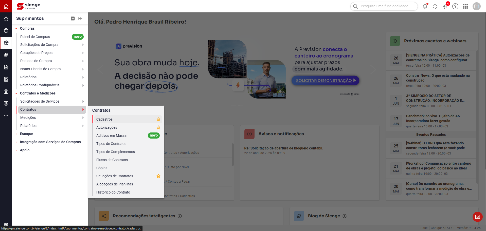
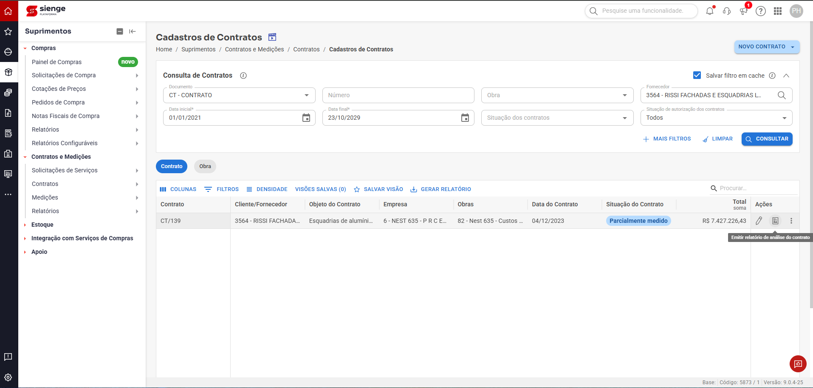
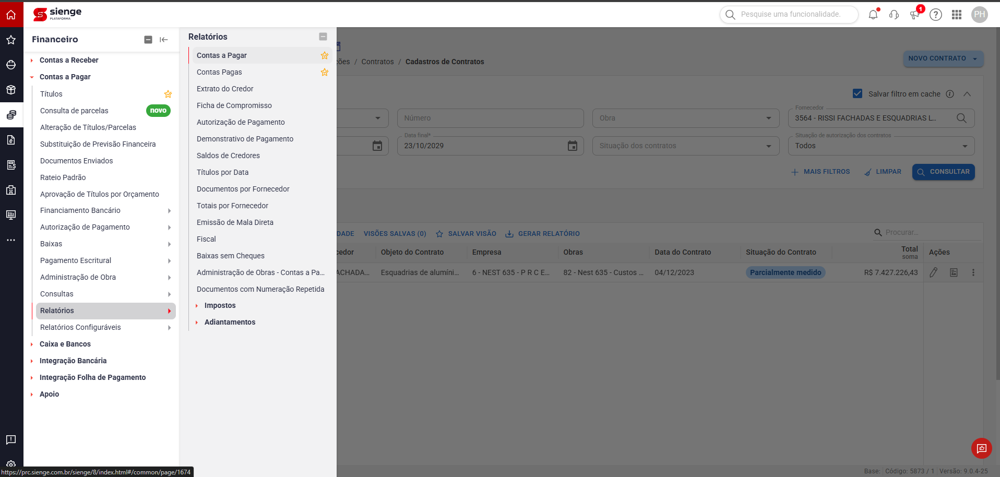
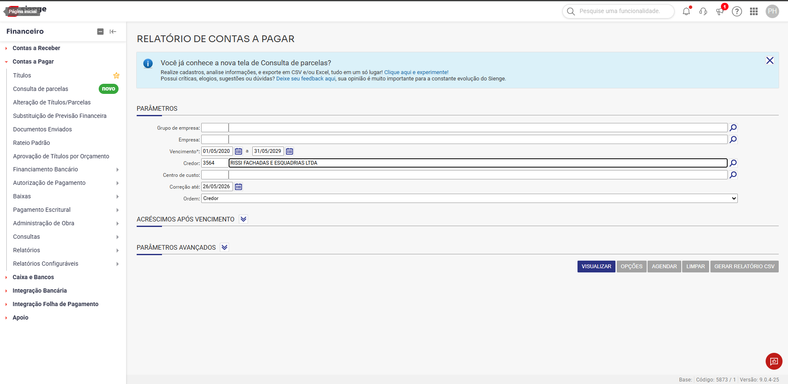
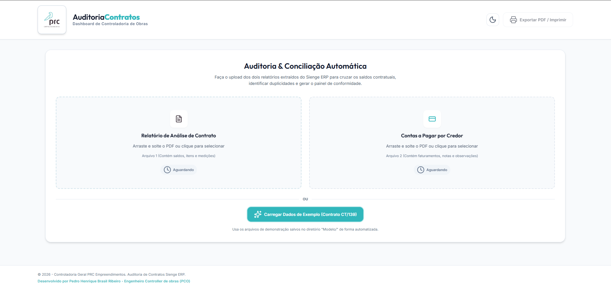
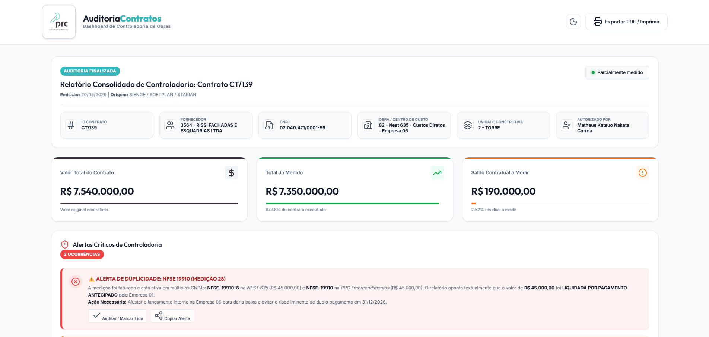

Introdução
A saúde financeira e o controle físico-financeiro das obras da PRC Empreendimentos exigem um rigor absoluto no acompanhamento de contratos de fornecedores e prestadores de serviços. O Sistema de Auditoria e Conciliação Automática de Contratos foi desenvolvido para otimizar essa rotina, automatizando o cruzamento entre as medições físicas executadas no canteiro de obras e os lançamentos de faturamento no setor de Contas a Pagar.
A utilização desta ferramenta de controladoria permite aos engenheiros de obra, gestores de contratos e profissionais de Planejamento e Controle de Obras (PCO) identificar, de forma instantânea e preditiva: duplicidades de faturamento, pagamentos antecipados sem medição física correspondente e desvios de saldos contratuais. Este manual descreve os pré-requisitos e o passo a passo operacional para extração de relatórios no ERP Sienge e operação da inteligência de auditoria.
Pré-requisitos Operacionais
Antes de iniciar o processo de auditoria, certifique-se de possuir:
- Credenciais de Acesso: Usuário ativo no ERP Sienge com permissões de consulta nos módulos de Suprimentos e Financeiro.
- Acesso ao App de Auditoria: Acesso à plataforma interna AuditoriaContratos (Dashboard de Controladoria de Obras da PRC).
- Identificação do Alvo: Número do Contrato (ex:
CT/139) e o código/nome do fornecedor correspondente (ex:3564 - RISSI FACHADAS E ESQUADRIAS LTDA) a ser auditado.
Guia Passo a Passo
Módulo 1: Extração de Dados no ERP Sienge
Para abastecer a inteligência do App de Auditoria, é necessário extrair dois relatórios fundamentais do Sienge. Siga as etapas abaixo com atenção às configurações de filtros.
Esta etapa extrai o saldo físico do contrato, o escopo contratado, os preços unitários e as medições físicas já aprovadas na obra.
- Acesse o caminho indicado acima no menu lateral do Sienge.

Figura 1: Módulo Suprimentos > Contratos e Medições > Contratos > Cadastros no Sienge. - No painel de Consulta de Contratos, preencha os filtros obrigatórios e de segurança:
- Documento: Selecione
CT - CONTRATO. - Fornecedor: Digite o código do fornecedor (ex:
3564) ou busque porRISSI FACHADAS E ESQUADRIAS LTDA. - Data Inicial: Configure para
01/01/2021. - Data Final (Margem Ampla): Insira um prazo futuro estendido, como
23/10/2029, para garantir que aditivos ou medições com cronograma alongado não fiquem de fora. - Situação de autorização dos contratos: Defina como
Todos.
- Documento: Selecione
- Clique no botão CONSULTAR no canto direito da tela de filtros.
- Na tabela de resultados, localize o contrato correspondente (ex:
CT/139). Na coluna de Ações, clique no segundo ícone: Emitir relatório de análise do contrato (conforme destacado abaixo).
Figura 2: Identificação da linha do contrato e seleção do ícone de Relatório de Análise. - Salve o arquivo gerado em formato PDF no seu computador.
Esta etapa extrai a rastreabilidade fiscal e financeira, identificando as Notas Fiscais emitidas, retenções técnicas, impostos retidos e parcelas pagas ou a pagar.
- Acesse o menu do módulo Financeiro conforme o caminho indicado.

Figura 3: Acesso ao Módulo Financeiro > Contas a Pagar > Relatórios > Contas a Pagar no Sienge. - Na tela RELATÓRIO DE CONTAS A PAGAR, configure os parâmetros de controle:
- Vencimento (Parâmetro Crítico): Insira uma margem de segurança preventiva extremamente ampla (ex:
01/05/2020a31/05/2029) para englobar todas as parcelas históricas, futuras e eventuais adiantamentos. - Credor: Digite o mesmo código de fornecedor do passo anterior (ex:
3564) para carregar o credor correspondente. - Ordem: Mude obrigatoriamente para a opção
Credorno campo de ordenação.

Figura 4: Preenchimento de margem ampla de vencimento, credor e ordenação por Credor. - Vencimento (Parâmetro Crítico): Insira uma margem de segurança preventiva extremamente ampla (ex:
- Clique no botão VISUALIZAR para gerar o relatório consolidado na tela e, em seguida, exporte ou salve o arquivo em formato PDF.
- Salve o arquivo PDF gerado em uma pasta local de fácil acesso.
Módulo 2: Operação no App de Auditoria & Conciliação
Com os arquivos extraídos do ERP Sienge, o processo de auditoria é 100% automatizado pela nossa plataforma interna.
A interface do app AuditoriaContratos foi projetada de forma intuitiva, operando em modelo Drag & Drop (arrastar e soltar).
- Abra o link do painel de Auditoria & Conciliação Automática da Controladoria de Obras da PRC.
- Na tela inicial, você visualizará dois cards tracejados para upload de arquivos:
- Painel Esquerdo (Relatório de Análise de Contrato): Arraste e solte o arquivo PDF extraído no Passo 1 (ou clique no card para selecionar). O sistema identificará os dados de saldos, itens e medições físicas.
- Painel Direito (Contas a Pagar por Credor): Arraste e solte o arquivo PDF extraído no Passo 2. O sistema mapeará faturamentos, notas fiscais e retenções de compromissos. (Nota: O suporte a planilhas no formato CSV está planejado para uma versão futura do sistema).

Figura 5: Tela inicial de upload dual de documentos no painel AuditoriaContratos. - Aguarde a validação: O status de cada painel mudará de "Aguardando" para "Processado com Sucesso".
Após o processamento dos arquivos, a tela de resultados do Relatório Consolidado de Controladoria é exibida instantaneamente.
- Verificação Cadastral: Valide no cabeçalho se o contrato carregado é o correto. No caso padrão, verifique a indicação de Contrato
CT/139, Fornecedor3564 - RISSI FACHADAS E ESQUADRIAS LTDA, CNPJ02.040.471/0001-59, Centro de Custo82 - Nest 635 - Custos Diretos - Empresa 06, Unidade Construtiva2 - TORREe a assinatura de liberação técnica porMatheus Katsuo Nakata Correa. - Monitoramento de KPIs Físico-Financeiros:
Analise com cautela os três cartões principais de controle financeiro:
- Valor Total do Contrato (R$ 7.540.000,00): Representa o valor global acordado e homologado para a execução completa das esquadrias da torre.
- Total Já Medido (R$ 7.350.000,00): Aponta que 97.48% do escopo físico das esquadrias já foi medido, conferido e aprovado pela engenharia de campo.
- Saldo Contratual a Medir (R$ 190.000,00): Mostra o valor residual e limite físico-financeiro de 2.52% que ainda resta a ser executado na obra.

Figura 6: Relatório Consolidado gerado pelo App com os KPIs de saldos e os alertas críticos de duplicidade no rodapé.
Entendendo os Resultados e Tratamento de Desvios
A inteligência do App de Auditoria realiza análises preditivas cruzando datas de emissão fiscal com datas de medição física. O principal ponto de atenção para os profissionais de PCO e gestores de contrato está na seção de "Alertas Críticos de Controladoria".
No cruzamento de dados do contrato de esquadrias CT/139 com o Contas a Pagar, o aplicativo identificou 2 Ocorrências Críticas de inconformidade fiscal-financeira.
O Desvio Identificado pelo Sistema: A medição foi faturada e consta ativa no contas a pagar em múltiplos CNPJs (lançamentos paralelos):
- NFSE 19910-6 vinculada à NEST 635 (Empresa 06) no valor de R$ 45.000,00.
- NFSE 19910 vinculada à PRC Empreendimentos (Empresa 01) no valor de R$ 45.000,00.
O motor lógico detectou que a nota de R$ 45.000,00 já foi LIQUIDADA POR PAGAMENTO ANTECIPADO pela Empresa 01 (PRC Empreendimentos). A manutenção do lançamento aberto na Empresa 06 cria um risco gravíssimo de duplo pagamento (desembolso duplicado de R$ 45.000,00) agendado para a data limite de 31/12/2026.
Plano de Ação Corretiva para o Usuário (PCO / Gestor de Contratos)
Ao se deparar com inconsistências como a descrita no alerta crítico da NFSE 19910, o operador deve adotar imediatamente o seguinte protocolo de solução:
| Etapa do Plano | Ação Requerida do Operador | Ferramenta / Responsável |
|---|---|---|
| 1. Notificação Financeira | Clique no botão "Copiar Alerta" na caixa vermelha do aplicativo de auditoria. Esse comando copiará a inconsistência estruturada para a área de transferência. Envie os detalhes imediatamente via e-mail ou sistema de comunicação interna para a equipe de Contas a Pagar. | App de Auditoria / Operador PCO |
| 2. Ajuste Financeiro | Acesse a tela de títulos do módulo Financeiro do Sienge e execute o ajuste do lançamento interno na Empresa 06 (NEST 635) para dar a devida baixa por compensação ou exclusão do lançamento duplicado, neutralizando o risco de desembolso no vencimento de 31/12/2026. | ERP Sienge / Contas a Pagar |
| 3. Retenções e Compensação | Caso a liquidação por adiantamento na Empresa 01 tenha pendências de retenções técnicas, certifique-se de que os valores retidos foram devidamente provisionados e conciliados na SPE correspondente. | ERP Sienge / Controladoria de Contratos |
| 4. Encerramento do Alerta | Após realizar a correção no ERP Sienge e obter a confirmação do Contas a Pagar, retorne ao dashboard e clique no botão "Auditar / Marcar Lido" (ícone ✔️) do alerta correspondente para atualizar o status de conformidade do contrato. | App de Auditoria / Engenheiro PCO |